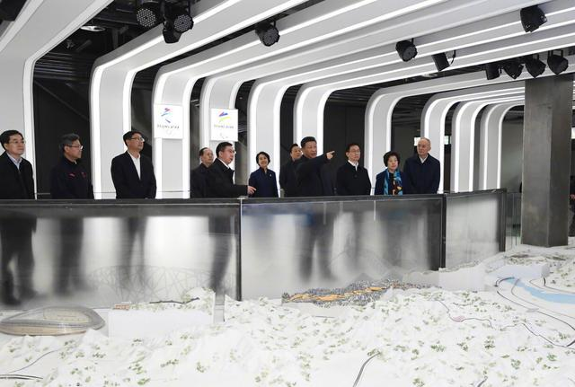

2月1日下午，习近平来到位于北京石景山首钢园区的北京冬奥会展示中心和北京冬奥组委办公区、国家冬季运动训练中心，考察北京冬奥会和冬残奥会筹办工作，看望慰问北京冬奥组委工作人员、运动员、教练员。
下午3时30分，习近平乘车来到石景山首钢园区。首钢石景山钢铁主流程停产后，北京冬奥会组织委员会落户于此。习近平走进北京冬奥会展示中心展厅，了解北京冬奥会、冬残奥会筹办工作、场馆和基础设施规划建设等情况。习近平不时察看、询问，了解到筹办工作有序推进，他表示，办好北京冬奥会、冬残奥会，是党和国家的一件大事。要全面落实绿色、共享、开放、廉洁的办奥理念，充分考虑场馆的可持续利用问题，高标准、高质量完成各项筹办任务。
延庆赛区场馆正在抓紧建设，习近平通过视频连线场馆建设者，给他们拜年，并向所有奋战在冬奥会场馆建设一线的建设者们致以诚挚的问候。习近平强调，场馆建设是办好北京冬奥会、冬残奥会的重中之重。要坚持奥运标准，倒排工期，有序推进场馆新建、改造和重大配套基础设施建设，确保按期保质完工并投入使用。要突出科技、智慧、绿色、节俭特色，注重运用先进科技手段，严格落实节能环保要求，保护生态环境和文物古迹，展示中国风格。
在冬奥组委办公楼，习近平看望慰问北京冬奥组委工作人员和志愿者代表。习近平表示，举办北京冬奥会、冬残奥会来之不易、意义重大，同实现“两个一百年”奋斗目标高度契合，给新时代北京发展注入了新的动力。北京将成为国际上唯一举办过夏季和冬季奥运会的“双奥城”。我们要言必信、行必果，扎实工作，步步为营，要拿竞技奖牌，也要拿精神奖牌、廉洁奖牌，兑现向世界作出的庄严承诺。举办冬奥会是推进京津冀协同发展的重要抓手，必须一体谋划、一体实施，实现北京同河北比翼齐飞。
随后，习近平来到国家冬季运动训练中心，在短道速滑馆结合展板听取速滑、花滑项目介绍，之后进入馆内察看国家短道队、花滑队训练备战情况。看到运动员们在冰面上挥洒汗水、刻苦备战，习近平表示赞许，叮嘱他们科学训练、注意安全。习近平步行前往冰壶馆，察看国家冰壶队训练备战情况。运动员、教练员看到习近平来了，争相围拢过来。习近平勉励他们注重选拔培养好人才，增强为国争光的荣誉感，坚定创造佳绩的信心，刻苦训练、全力备战、勇攀高峰，力争实现新的突破。冰壶馆前厅的沙盘，展示了首钢北区和冬奥会滑雪大跳台规划建设情况，习近平边看边问。他强调，体育强则国家强，国家强则体育强。发展体育事业不仅是实现中国梦的重要内容，还能为中华民族伟大复兴提供凝心聚气的强大精神力量。我们要弘扬中华体育精神，弘扬体育道德风尚，推动群众体育、竞技体育、体育产业协调发展，加快建设体育强国。考察结束时，习近平同运动员、教练员和工作人员代表等握手告别，现场响起热烈的掌声。